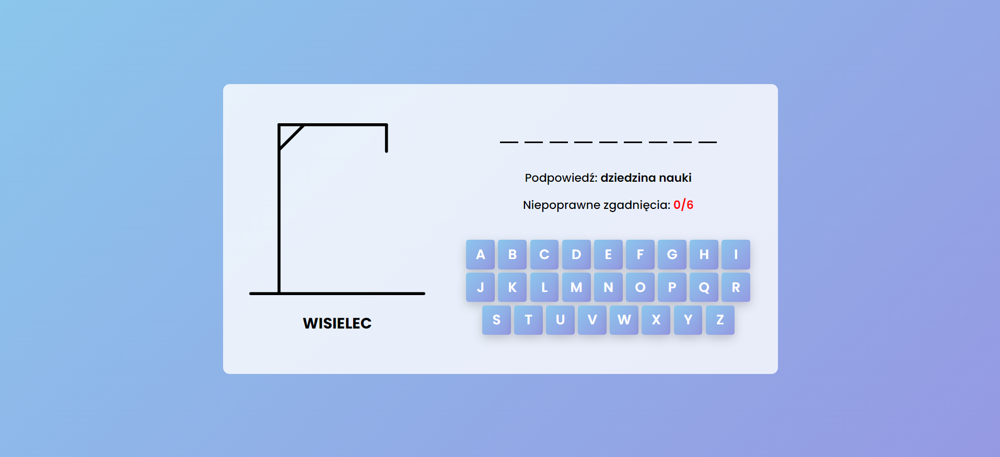
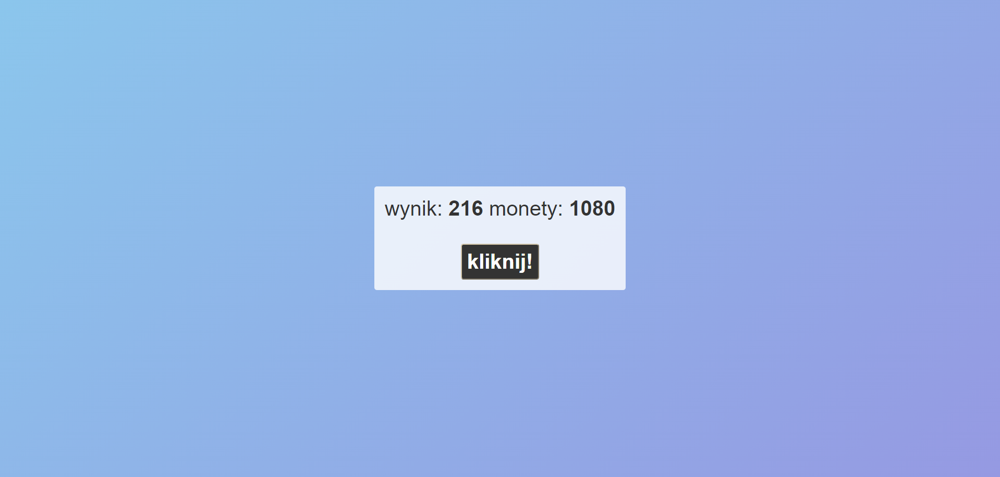
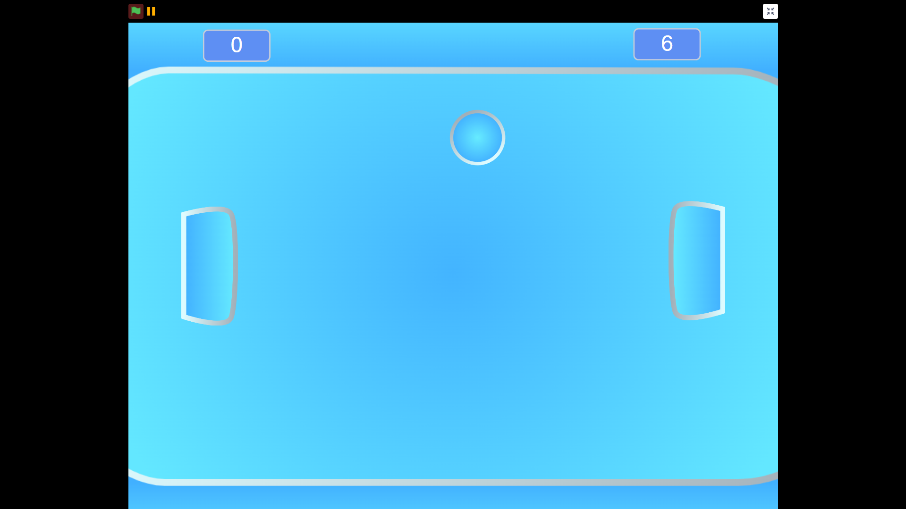

Gra Memory
Gra memory, w której gracz musi zapamiętać pozycję różnych ikon.
Wisielec
Klasyczna gra w zgadywanie słów, w której gracz musi odgadnąć słowo z ograniczoną liczbą prób.
Clicker
Uzależniająca gra przyrostowa, w której gracze klikają, aby generować punkty i odblokowywać ulepszenia.

Flappy Bird
Gra mobilna z przewijającym się ekranem, w której gracze sterują ptakiem i prowadzą go przez przeszkody.

Kółko i krzyżyk
Klasyczna gra papierowo-ołówkowa, w której gracze na zmianę zaznaczają pola w siatce 3x3, aby osiągnąć wygrywający wzór.
Pong
Pong to inna gra, nie stworzona przez żadnego z nas. Jest to po prostu link do wersji gry, stworzonej przez Mikołaja Cybulskiego.